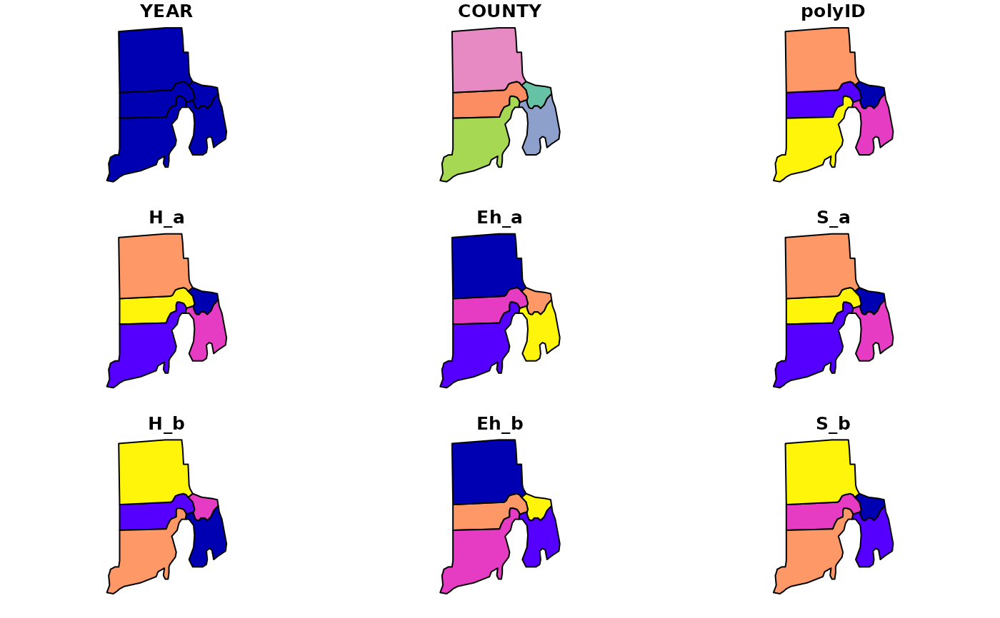
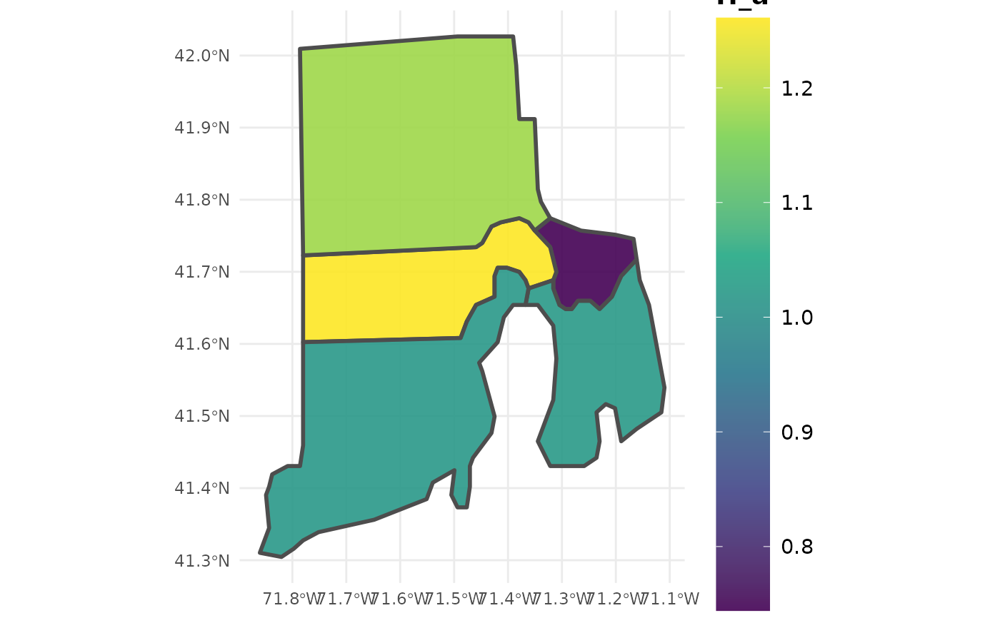

Estimate diversity from FIADB
diversity.RdProduces estimates of diversity from FIA data. Returns Shannon's index, Shannon's equitability, and richness for alpha (mean/SE of stands), beta, and gamma diversity. Default behavior estimates species diversity, using TPA_UNADJ (trees per acre) as a state variable and SPCD (species) to groups of individuals. Estimates can be produced for regions defined within the FIA Database (e.g. counties), at the plot level, or within user-defined areal units. Options to group estimates by size class and other variables defined in the FIADB. If multiple reporting years (EVALIDs) are included in the data, estimates will be output as a time series. If multiple states are represented by the data, estimates will be output for the full region (all area combined), unless specified otherwise (e.g. grpBy = STATECD).
Usage
diversity(db, grpBy = NULL, polys = NULL, returnSpatial = FALSE, bySizeClass = FALSE,
landType = 'forest', treeType = 'live', method = 'TI', lambda = 0.5,
stateVar = TPA_UNADJ, grpVar = SPCD, treeDomain = NULL,
areaDomain = NULL, byPlot = FALSE, condList = FALSE, totals = FALSE,
nCores = 1)Arguments
- db
FIA.DatabaseorRemote.FIA.Databaseobject produced fromreadFIAorgetFIA. If aRemote.FIA.Database, data will be read in and processed state-by-state to conserve RAM (see details for an example).- grpBy
variables from PLOT, PLOTGEOM, COND, or TREE tables to group estimates by (NOT quoted). Multiple grouping variables should be combined with
c(), and grouping will occur heirarchically. For example, to produce seperate estimates for each ownership group within methods of stand regeneration, specifyc(STDORGCD, OWNGRPCD).- polys
sporsfPolygon/MultiPolgyon object; Areal units to bin data for estimation. Seperate estimates will be produced for region encompassed by each areal unit. FIA plot locations will be reprojected to match projection ofpolysobject.- returnSpatial
logical; if TRUE, merge population estimates with
polysand return assfmultipolygon object. WhenbyPlot = TRUE, return plot-level estimates assfspatial points.- bySizeClass
logical; if TRUE, returns estimates grouped by size class (default 2-inch intervals, see
makeClassesto compute other size class intervals).- landType
character ('forest' or 'timber'); Type of land which estimates will be produced for. Timberland is a subset of forestland (default) which has high site potential and non-reserve status (see details).
- treeType
character ("all", "live", "dead", or "gs"); Type of tree which estimates will be produced for. All includes all stems, live and dead, greater than 1 in. DBH. Live/Dead includes all stems greater than 1 in. DBH which are live (default) or dead (leaning less than 45 degrees), respectively. GS (growing-stock) includes live stems greater than 5 in. DBH which contain at least one 8 ft merchantable log.
- method
character; design-based estimator to use. One of: "TI" (temporally indifferent, default), "annual" (annual), "SMA" (simple moving average), "LMA" (linear moving average), or "EMA" (exponential moving average). See Stanke et al 2020 for a complete description of these estimators.
- lambda
numeric (0,1); if
method = 'EMA', the decay parameter used to define weighting scheme for annual panels. Low values place higher weight on more recent panels, and vice versa. Specify a vector of values to compute estimates using mulitple wieghting schemes, and useplotFIAwithgrpset tolambdato produce moving average ribbon plots. See Stanke et al 2020 for examples.- stateVar
variable from TREE table to use as state variable (NOT quoted). Default,
TPA_UNADJ. Try,DRYBIO_AGfor aboveground biomass,pi*(DIA/2)^2for basal area, or others.- grpVar
factor, variable from TREE table to define individual groups (NOT quoted). Default,
SPCD. Try,SPGRPCDfor species group,makeClasses(db$TREE$DIA, interval = 2)for diameter class, or others.- treeDomain
logical predicates defined in terms of the variables in PLOT, TREE, and/or COND tables. Used to define the type of trees for which estimates will be produced (e.g. DBH greater than 20 inches:
DIA > 20, Dominant/Co-dominant crowns only:CCLCD %in% c(2,3). Multiple conditions are combined with&(and) or|(or). Only trees where the condition evaluates to TRUE are used in producing estimates. Should NOT be quoted.- areaDomain
logical predicates defined in terms of the variables in PLOT and/or COND tables. Used to define the area for which estimates will be produced (e.g. within 1 mile of improved road:
RDDISTCD %in% c(1:6), Hard maple/basswood forest type:FORTYPCD == 805. Multiple conditions are combined with&(and) or|(or). Only plots within areas where the condition evaluates to TRUE are used in producing estimates. Should NOT be quoted.- totals
logical; if TRUE, return total population estimates (e.g. total area) along with ratio estimates (e.g. mean trees per acre).
- byPlot
logical; if TRUE, returns estimates for individual plot locations instead of population estimates.
- condList
logical; if TRUE, returns condition-level summaries intended for subsequent use with
customPSE.- nCores
numeric; number of cores to use for parallel implementation. Check available cores using
detectCores. Default = 1, serial processing.
Details
Estimation Details
Estimation of forest variables follows the procedures documented in Bechtold and Patterson (2005) and Stanke et al 2020. Procedures for computing diversity indices are outlined in Hill (1973) and Shannon (1948).
Alpha-level indices are computed as the mean diversity of a stand. Specifically, alpha diversity is estimated using a sample-based ratio-of-means estimator of stand diversity (e.g. Richness) * land area of stand / total land area within the domain of interest. Thus estimates of alpha diversity within a stand are weighted by the area that stand represents. Gamma-level diversity is computed as a regional index, pooling all plot data together. Beta diversity is computed as gamma diversity - alpha diversity, and thus represents the excess of regional diversity with respect to local diversity.
Users may specify alternatives to the 'Temporally Indifferent' estimator using the method argument. Alternative design-based estimators include the annual estimator ("ANNUAL"; annual panels, or estimates from plots measured in the same year), simple moving average ("SMA"; combines annual panels with equal weight), linear moving average ("LMA"; combine annual panels with weights that decay linearly with time since measurement), and exponential moving average ("EMA"; combine annual panels with weights that decay exponentially with time since measurement). The "best" estimator depends entirely on user-objectives, see Stanke et al 2020 for a complete description of these estimators and tradeoffs between precision and temporal specificity.
When byPlot = FALSE (i.e., population estimates are returned), the "YEAR" column in the resulting dataframe indicates the final year of the inventory cycle that estimates are produced for. For example, an estimate of current forest area (e.g., 2018) may draw on data collected from 2008-2018, and "YEAR" will be listed as 2018 (consistent with EVALIDator). However, when byPlot = TRUE (i.e., plot-level estimates returned), the "YEAR" column denotes the year that each plot was measured (MEASYEAR), which may differ slightly from its associated inventory year (INVYR).
Stratified random sampling techniques are most often employed to compute estimates in recent inventories, although double sampling and simple random sampling may be employed for early inventories. Estimates are adjusted for non-response bias by assuming attributes of non-response plot locations to be equal to the mean of other plots included within thier respective stratum or population.
Working with "Big Data"
If FIA data are too large to hold in memory (e.g., R throws the "cannot allocate vector of size ..." error), use larger-than-RAM options. See documentation of link{readFIA} for examples of how to set up a Remote.FIA.Database. As a reference, we have used rFIA's larger-than-RAM methods to estimate forest variables using the entire FIA Database (~50GB) on a standard desktop computer with 16GB of RAM. Check out our website for more details and examples.
Easy, efficient parallelization is implemented with the parallel package. Users must only specify the nCores argument with a value greater than 1 in order to implement parallel processing on their machines. Parallel implementation is achieved using a snow type cluster on any Windows OS, and with multicore forking on any Unix OS (Linux, Mac). Implementing parallel processing may substantially decrease free memory during processing, particularly on Windows OS. Thus, users should be cautious when running in parallel, and consider implementing serial processing for this task if computational resources are limited (nCores = 1).
Definition of forestland
Forest land must have at least 10-percent canopy cover by live tally trees of any size, including land that formerly had such tree cover and that will be naturally or artificially regenerated. Forest land includes transition zones, such as areas between heavily forest and non-forested lands that meet the mimium tree canopy cover and forest areas adjacent to urban and built-up lands. The minimum area for classification of forest land is 1 acre in size and 120 feet wide measured stem-to-stem from the outer-most edge. Roadside, streamside, and shelterbelt strips of trees must have a width of at least 120 feet and continuous length of at least 363 feet to qualify as forest land. Tree-covered areas in agricultural production settings, such as fruit orchards, or tree-covered areas in urban settings, such as city parks, are not considered forest land.
Timber land is a subset of forest land that is producing or is capable of producing crops of industrial wood and not withdrawn from timber utilization by statute or administrative regulation. (Note: Areas qualifying as timberland are capable of producing at least 20 cubic feet per acre per year of industrial wood in natural stands. Currently inaccessible and inoperable areas are NOT included).
Value
Dataframe or sf object (if returnSpatial = TRUE). If byPlot = TRUE, values are returned for each plot (PLOT_STATUS_CD = 1 when forest exists at the plot location). All variables with names ending in SE, represent the estimate of sampling error (%) of the variable.
H_a: mean Shannon's Diversity Index, alpha (stand) level
H_b: Shannon's Diversity Index, beta (landscape) level
H_g: Shannon's Diversity Index, gamma (regional) level
Eh_a: mean Shannon's Equitability Index, alpha (stand) level
Eh_b: Shannon's Equitability Index, beta (landscape) level
Eh_g: Shannon's Equitability Index, gamma (regional) level
S_a: mean Species Richness, alpha (stand) level
S_b: Species Richness, beta (landscape) level
S_g: Species Richness, gamma (regional) level
References
rFIA website: https://doserlab.com/files/rfia/
FIA Database User Guide: https://research.fs.usda.gov/understory/forest-inventory-and-analysis-database-user-guide-nfi
Bechtold, W.A.; Patterson, P.L., eds. 2005. The Enhanced Forest Inventory and Analysis Program - National Sampling Design and Estimation Procedures. Gen. Tech. Rep. SRS - 80. Asheville, NC: U.S. Department of Agriculture, Forest Service, Southern Research Station. 85 p. https://www.srs.fs.usda.gov/pubs/gtr/gtr_srs080/gtr_srs080.pdf
Stanke, H., Finley, A. O., Weed, A. S., Walters, B. F., & Domke, G. M. (2020). rFIA: An R package for estimation of forest attributes with the US Forest Inventory and Analysis database. Environmental Modelling & Software, 127, 104664.
Analysis of ecological communities. (2002). United States: M G M SOFTWARE DESIGN (OR).
Hill, M. O. (1973). Diversity and Evenness: A Unifying Notation and Its Consequences. Ecology, 54(2), 427-432. doi:10.2307/1934352.
Shannon, C. E. (1948). A Mathematical Theory of Communication. Bell System Technical Journal, 27(3), 379-423. doi:10.1002/j.1538-7305.1948.tb01338.x.
Note
All percent sampling error estimates (SE) are returned as the "percent coefficient of variation" (standard deviation / mean * 100) for consistency with EVALIDator. To determine the margin of error for confidence intervals, use the following formula, t * (SE * mean / 100), where t is the corresponding t value for your desired level of confidence (e.g., approximately 2 for a 95% confidence interval). To determine the degrees of freedom for the t value, use nStands. Alternatively, you can use a normal approximation for the confidence interval. The validity of the normal approximation decreases as the sample size decreases.
Examples
# Load data from rFIA package
data(fiaRI)
data(countiesRI)
# Make a most recent subset
fiaRI_mr <- clipFIA(fiaRI)
# Most recent estimates for live stems on forest land
diversity(db = fiaRI_mr,
landType = 'forest',
treeType = 'live')
#> # A tibble: 1 × 15
#> YEAR H_a Eh_a S_a H_b Eh_b S_b H_g Eh_g S_g H_a_SE Eh_a_SE
#> <dbl> <dbl> <dbl> <dbl> <dbl> <dbl> <dbl> <dbl> <dbl> <int> <dbl> <dbl>
#> 1 2018 1.12 0.203 5.54 1.41 -0.147 39.5 2.53 0.0562 45 3.54 2.95
#> # ℹ 3 more variables: S_a_SE <dbl>, nPlots_TREE <int>, nPlots_AREA <int>
# \donttest{
# Same as above at the plot-level
diversity(db = fiaRI_mr,
landType = 'forest',
treeType = 'live',
byPlot = TRUE)
#> # A tibble: 127 × 7
#> YEAR pltID PLT_CN H S Eh PROP_FOREST
#> <int> <chr> <dbl> <dbl> <int> <dbl> <dbl>
#> 1 2013 1_44_1_228 1.45e13 1.49 7 0.213 0.667
#> 2 2013 1_44_3_144 1.45e13 1.22 5 0.243 0.170
#> 3 2013 1_44_7_126 2.47e14 1.60 8 0.200 0.5
#> 4 2013 1_44_7_169 1.45e13 0.634 3 0.211 1
#> 5 2013 1_44_7_177 2.47e14 0.538 2 0.269 0.25
#> 6 2013 1_44_7_229 1.45e13 1.63 7 0.232 1
#> 7 2013 1_44_7_245 1.45e13 0.950 3 0.317 0.25
#> 8 2013 1_44_7_306 1.45e13 1.15 4 0.287 0.217
#> 9 2013 1_44_7_341 2.47e14 0.784 6 0.131 1
#> 10 2013 1_44_7_61 1.45e13 1.43 7 0.204 1
#> # ℹ 117 more rows
# Most recent estimates grouped by stand age on forest land
# Make a categorical variable which represents stand age (grouped by 10 yr intervals)
fiaRI_mr$COND$STAND_AGE <- makeClasses(fiaRI_mr$COND$STDAGE, interval = 10)
diversity(db = fiaRI_mr,
grpBy = STAND_AGE)
#> # A tibble: 11 × 16
#> YEAR STAND_AGE H_a Eh_a S_a H_b Eh_b S_b H_g Eh_g S_g
#> <dbl> <chr> <dbl> <dbl> <dbl> <dbl> <dbl> <dbl> <dbl> <dbl> <int>
#> 1 2018 [0,10) 0 0 0.75 0 0 0.25 0 0 1
#> 2 2018 [20,30) 0 0 1 0 0 0 0 0 1
#> 3 2018 [30,40) 1.16 0.246 5.17 1.59e- 1 -0.164 10.8 1.31 0.0821 16
#> 4 2018 [40,50) 1.08 0.182 6.12 1.23e+ 0 -0.0374 9.88 2.31 0.144 16
#> 5 2018 [50,60) 0.544 0.177 2.91 9.79e- 1 -0.0965 16.1 1.52 0.0802 19
#> 6 2018 [60,70) 1.24 0.218 5.78 1.26e+ 0 -0.129 22.2 2.50 0.0893 28
#> 7 2018 [70,80) 1.15 0.202 5.73 1.32e+ 0 -0.120 24.3 2.47 0.0824 30
#> 8 2018 [80,90) 1.12 0.201 5.68 9.93e- 1 -0.126 22.3 2.11 0.0754 28
#> 9 2018 [90,100) 1.30 0.208 6.23 9.00e- 1 -0.0785 10.8 2.20 0.129 17
#> 10 2018 [100,110) 1.03 0.271 4.04 3.56e- 1 -0.0741 2.96 1.38 0.197 7
#> 11 2018 [110,120] 1.26 0.140 9 2.22e-16 0 0 1.26 0.140 9
#> # ℹ 5 more variables: H_a_SE <dbl>, Eh_a_SE <dbl>, S_a_SE <dbl>,
#> # nPlots_TREE <int>, nPlots_AREA <int>
# Estimates for live white pine ( > 12" DBH) on forested mesic sites (all available inventories)
diversity(fiaRI,
treeType = 'live',
treeDomain = DIA > 12,
areaDomain = PHYSCLCD %in% 21:29) # Mesic Physiographic classes
#> # A tibble: 6 × 15
#> YEAR H_a Eh_a S_a H_b Eh_b S_b H_g Eh_g S_g H_a_SE Eh_a_SE
#> <dbl> <dbl> <dbl> <dbl> <dbl> <dbl> <dbl> <dbl> <dbl> <int> <dbl> <dbl>
#> 1 2013 0.708 0.209 2.64 1.66 -0.130 27.4 2.37 0.0791 30 7.67 6.30
#> 2 2014 0.714 0.210 2.66 1.64 -0.129 26.3 2.35 0.0810 29 7.54 6.28
#> 3 2015 0.725 0.205 2.71 1.60 -0.125 26.3 2.32 0.0801 29 7.65 6.49
#> 4 2016 0.746 0.210 2.76 1.57 -0.131 26.2 2.31 0.0798 29 7.40 6.21
#> 5 2017 0.749 0.209 2.75 1.58 -0.129 26.3 2.33 0.0803 29 7.52 6.35
#> 6 2018 0.751 0.211 2.74 1.58 -0.131 26.3 2.33 0.0804 29 7.44 6.24
#> # ℹ 3 more variables: S_a_SE <dbl>, nPlots_TREE <int>, nPlots_AREA <int>
# Most recent estimates for growing-stock on timber land by size class
diversity(db = fiaRI_mr,
landType = 'timber',
treeType = 'gs',
bySizeClass = TRUE)
#> # A tibble: 15 × 16
#> YEAR sizeClass H_a Eh_a S_a H_b Eh_b S_b H_g Eh_g S_g
#> <dbl> <dbl> <dbl> <dbl> <dbl> <dbl> <dbl> <dbl> <dbl> <dbl> <int>
#> 1 2018 5 4.73 1.54 17.1 -2.36 -1.46 11.9 2.37 0.0818 29
#> 2 2018 7 3.28 1.12 12.7 -0.923 -1.03 11.3 2.36 0.0982 24
#> 3 2018 9 3.25 1.17 11.3 -0.840 -1.05 8.73 2.41 0.120 20
#> 4 2018 11 1.54 0.592 6.62 0.810 -0.480 14.4 2.35 0.112 21
#> 5 2018 13 2.65 1.09 10.9 -0.289 -0.956 7.10 2.36 0.131 18
#> 6 2018 15 1.60 0.690 8.06 0.540 -0.557 7.94 2.14 0.133 16
#> 7 2018 17 0.425 0.213 6.40 1.46 -0.0413 4.60 1.88 0.171 11
#> 8 2018 19 1.85 0.927 16.5 -0.196 -0.720 -8.49 1.66 0.207 8
#> 9 2018 21 1.42 0.712 21.4 0.193 -0.510 -13.4 1.62 0.202 8
#> 10 2018 23 0 0 12.1 1.45 0.242 -6.08 1.45 0.242 6
#> 11 2018 25 NA NA NA NA NA NA 0.693 0.347 2
#> 12 2018 27 NA NA NA NA NA NA 1.24 0.311 4
#> 13 2018 29 NA NA NA NA NA NA 0 0 1
#> 14 2018 31 NA NA NA NA NA NA 0.562 0.281 2
#> 15 2018 35 0 0 1 0 0 0 0 0 1
#> # ℹ 5 more variables: H_a_SE <dbl>, Eh_a_SE <dbl>, S_a_SE <dbl>,
#> # nPlots_TREE <int>, nPlots_AREA <int>
# Same as above, implemented in parallel
# parallel::detectCores(logical = FALSE) # 4 cores available, we will take 2
# diversity(db = fiaRI_mr,
# landType = 'timber',
# treeType = 'gs',
# bySizeClass = TRUE,
# nCores = 2)
# Most recent estimates for live stems on forest land grouped by user-defined areal units
ctSF <- diversity(clipFIA(fiaRI, mostRecent = TRUE),
polys = countiesRI,
returnSpatial = TRUE)
plot(ctSF) # Plot multiple variables simultaneously
#> Warning: plotting the first 9 out of 17 attributes; use max.plot = 17 to plot all

plotFIA(ctSF, H_a) # Plot of mean Shannons Index of stands

# }